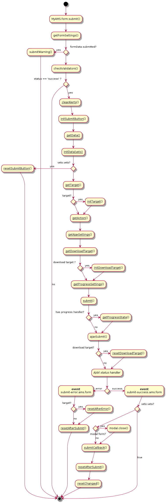

Forms are a very common use case into web applications.
MyAMS handles AJAX forms using the JQuery form plug-in, but is adding a few features to correctly handle all aspects of form submission.
MyAMS provides a general use case mechanism, but provides many entry points which can be used to customize this default behaviour.
General submit workflow proposed by MyAMS is described in the following diagram; this
workflow is applied automatically for all forms with the data-async attribute
set (other forms being submitted without using AJAX):

All underlined functions names have default implementations provided by MyAMS, but each
of them can be overriden, using data attributes applied to the form or to the button used to
submit the form, or given in the options parameter of MyAMS.form.submit
function; see setting form options to know
which settings can be used.
The whole validation process is done by the validate
plug-in; if the client validation rules are accepted, the form is submitted using MyAMS
form.submit() function.
If you don't want to use this plug-in and MyAMS validation and submission
process, set form's novalidate attribute to novalidate.
If you want to validate your form but use a classic form's submit, just
remove the data-async attribute.